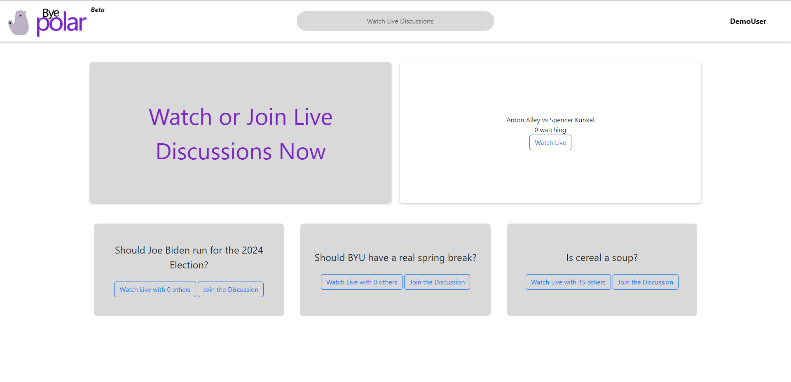
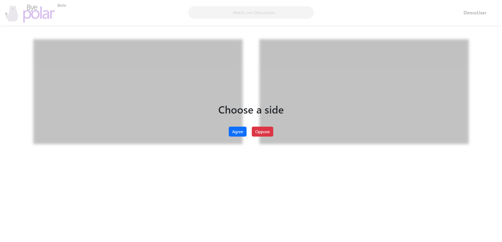
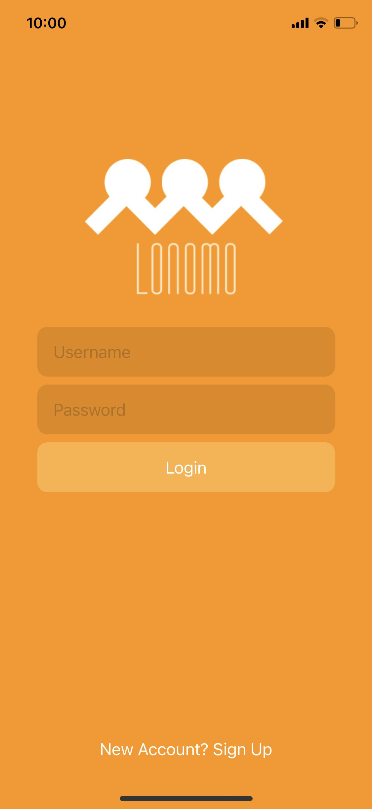
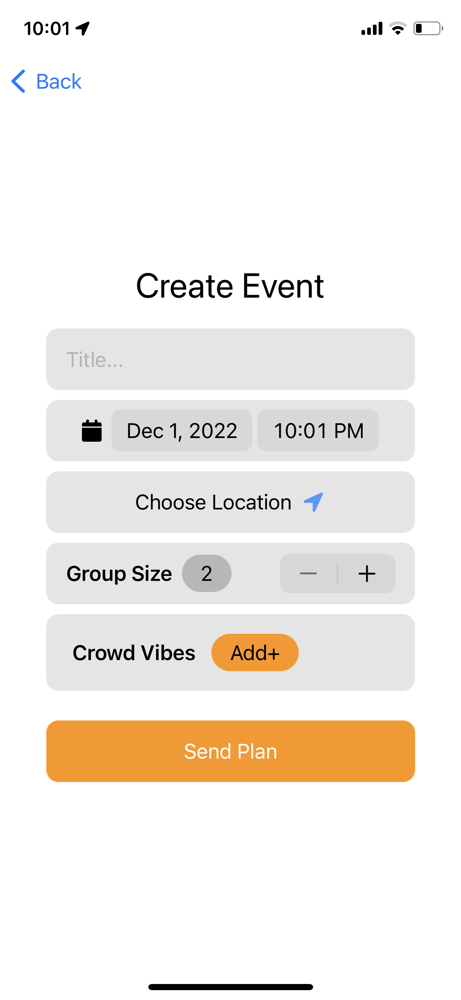
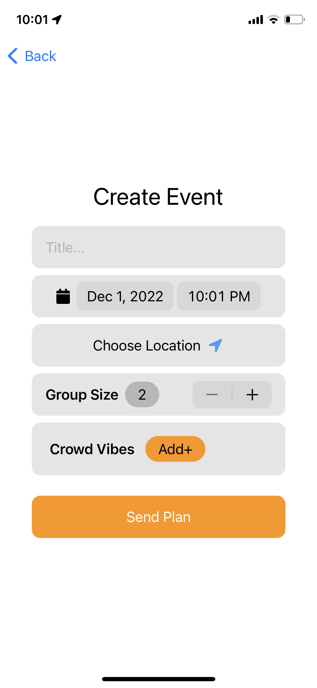
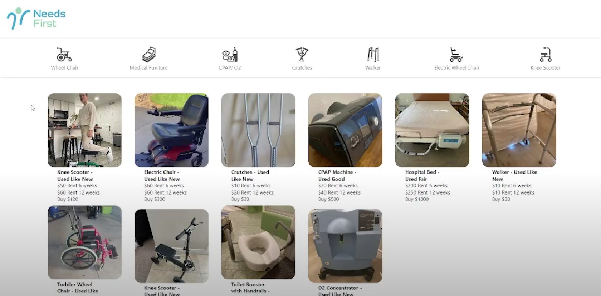
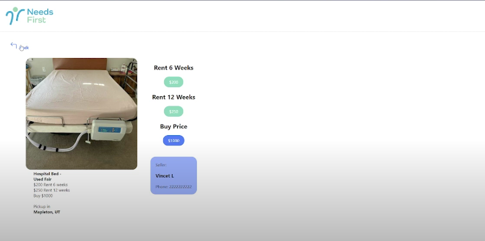

Projects
-
Byepolar.tv: React.js and Firebase App
Byepolar.tv is a web app that I am currently developing with Devin Jernigan as the Product Manager. It is a place for people to come together and discuss typically contreversial topics in a way that they can see all sides of the argument and gain trust and respect for other people. It is the first time that I have used firebase, and it has proved to be very useful, as I am using the realtime database, authentication, and hosting from it. I also learned how to use github actions to automatically deploy updates to the production site as I pull request them into the Production Branch, which has been really cool to use. The hardest part about this project is video call, because we are trying to get people to discuss online through video call, and it is difficult to do this when we want to do it in a very customized way, and on a tight budget(zero).
Skills Used:- Figma
- React.js
- Firebase
- WebRTCPeer
- Peer to Peer Video Call
  -
Lonomo: Swift iOS mobile development
Lonomo was project I was working on for a few months fall 2022. I wanted to create a social event app to help people make more friends doing hobbies they love to do. I learned swift from scratch for this project, and learned how to connect it to the backend, which I created using the Django-rest framework in python, complete with authentication and api endpoints. I was also in a user experience course while I was designing this app, so I spent extra care on the design, and fully designed it in Figma before implementing it in code. I did user testing with the user experience as well, had about a dozen people test it
Skills Used:- Figma
- iOS
- Swift
- Python
- Django Rest
Github Repo API
Github Repo iOS 

-
Needs First: Hackathon Full-stack application
Along with a product manager, Devin Jernigan, and a designer, Cedric Lancy, and I as the engineer, we created this application under 8 hours for a competition to get into the Sandbox program at BYU. The idea behind it was a marketplace to rent out medical equipment, so I created a live linux server running react on the front end, and Django-rest on the backend to create this interactive website.
Skills Used:- Python
- Javascript
- React.js
- Django Rest
- Linux Server
Github Repo 
About

Anton Alley grew up in the suburbs of Chicago, IL with 5 siblings.
Contact
To contact me, please send an email to anton.alley@outlook.com.